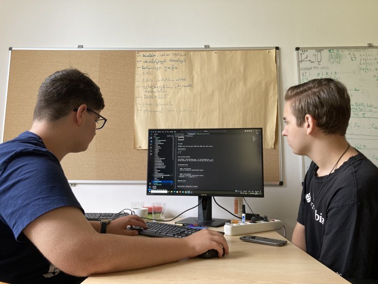
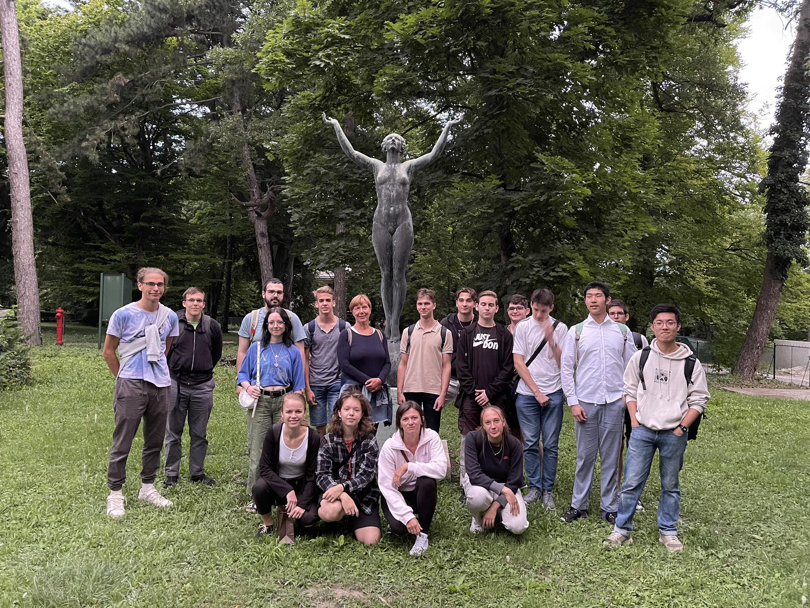

Wigner Summer Camp 2024
In summer 2024, I had the honour to join the Wigner Summer Camp for High Schoolers, organised between 1-5 July. The aim of the camp was to show high schoolers the work in research and overall a researcher's everday. Myself and twelve other participants were divided into pairs and a group of three, working on one research-related project for the week. I got to work with the Data and Compute Intensice Sciences Group on Law-based data transformation (on time-series data).
In the camp Tibor Geröly (Petőfi Sándor Roman Catholic Primary and Secondary School from Vecsés) and I started with a short introduction on the foundatimental mathematical and programming background and then worked on testing the ALT method, with the aim of testing the research group's newly developed data analysis method on different databases from timeseriesclassification.com. With our method we ran trains with several hyperparameter combinations, at that point solely focusing on how well does the model work and whether some patterns can be found regarding the different hyperparameter combinations.
In short, my personal responsibilities were focusing on comprehending the needed mathematical and programming foundation, getting a basic understanding of how ALT works and running several tests of the model in Python and visualizing these results on different plots with matplotlib.
At the end of the week we had to present our weekly work in front of the other participants - including the students, the mentors and high school teachers invited to the final seminar. The main point of our presentation was to show the differences between a conventional neural network and the ALT method, while also presenting that with the choosen right parameters we can reach high precision (over 90%). Next to that, we also tried to present to the audience the importance of Artificial Intelligence in our lives.
The camp - based on it's main purpose - was an excellent way to help students to find a specific research opportunity in the STEM fields, especially in Physics, or in Physics-related other work. I am extremly grateful for this opportunity and would like to express my graditude to Éva Mária Oláh, PhD. and Hajnalka Ollé for organising the week and Péter József Lévai, PhD., Director General, (an alumnus from my high school) for supporting this program.


ALT refers to the data transformation method introduced in a recently published article, "Adaptive law-based feature representation for time series classification" (Scientific Reports, 2025).
ALTx refers to the Python package implementation of ALT, introduced in a recently published article, "altx: a python package for adaptive law-based transformation in time series classification" (Machine Learning: Science and Technology, 2026).
Participants: Antal Jakovác, PhD1 (PI); Éva Mária Oláh, PhD1, 2 (PM); Hajnalka Ollé1 (PM); Balázs Paszkál Halmos1, 3 (Co-I); Balázs Hajós1, 4 (Co-I); Vince Áron Molnár1, 3 (Co-I); Levente László Pocsay1, 5, Tibor Geröly1, 6.
- HUN-REN Wigner Research Centre for Physics, Data and Compute Intensive Sciences Research Group (Budapest, Hungary)
- HUN-REN Wigner Research Centre for Physics, Institute for Particle- and Nuclear Physics (Budapest, Hungary)
- Tampere University, Faculty of Engineering and Natural Sciences (Tampere, Finland)
- Eötvös Loránd University, Faculty of Science (Budapest, Hungary)
- Földes Ferenc Secondary Grammar School (Miskolc, Hungary)
- Petőfi Sándor Roman Catholic Primary School and High School (Vecsés, Hungary)